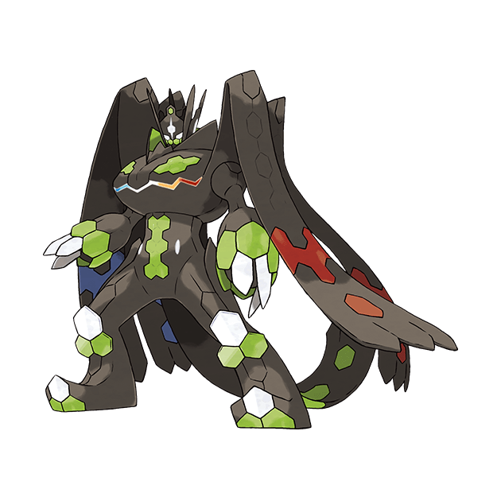

Zygarde Complete Form เป็นร่างสุดยอดของ Zygarde ซึ่งเกิดจากการรวมกันของ Zygarde Core และ Zygarde Cell ทั้งหมดในโลกโปเกม่อน Zygarde ถูกสร้างขึ้นมาเพื่อรักษาสมดุลของธรรมชาติและควบคุมระบบนิเวศไม่ให้ล่มสลาย โดยร่าง Complete Form นี้มีพลังอันยิ่งใหญ่ที่สามารถควบคุมสภาพแวดล้อมและยับยั้งการทำลายล้างของธรรมชาติได้
Zygarde Complete Form มีรูปร่างเป็นงูขนาดใหญ่ที่มีลักษณะของมังกร เป็นโปเกม่อนที่มีพลังในการควบคุมพลังงานธรรมชาติ สามารถใช้พลังของมันเพื่อรักษาสมดุลของโลกโปเกม่อนได้ ถือเป็นร่างที่มีพลังมากที่สุดในบรรดา Zygarde ทุกระดับ และเป็นที่เกรงขามของโปเกม่อนในตำนานตัวอื่นๆ
